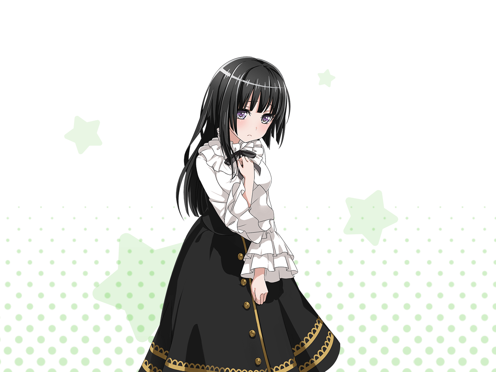

燐子
……
燐子
！？ だ……誰ですか……？
燐子
あ……{{userName}}さん……
燐子
え……えっと……お、お疲れ様です……
燐子
きょ、今日ですか？
今日はその……お買い物に……
燐子
あなたもですか……？
き、奇遇ですねっ
燐子
いえ！ そんな！ 迷惑だなんて……
燐子
た、ただその…
ちょっと、人と話すのに緊張して……
燐子
こんなんじゃ、ダメ…ですよね……
燐子
……
燐子
……え？
でも、バンドのメンバーといる時は……
楽しそう……？
燐子
は……はい。みんなと一緒にいる時は……
その……楽しい……です……
燐子
……私、Roseliaに入ることができたおかげで、
その……まだまだですけど……
燐子
少しずつ、話せるようになってきたというか……
前よりも、積極的になれた……気がしてます……
ま、前なら１人で外なんて……出歩きませんでしたし……
燐子
ほ……本当に、まだまだですけど……
燐子
……え？ な、なんですか？
ゆっくり、話せるようになるといいね……？
燐子
………………はい。あの、ありがとうございます……
燐子
えっと、それでは……そろそろ……
私……行きます……
燐子
……はい。また、ライブハウスで……
……さようなら